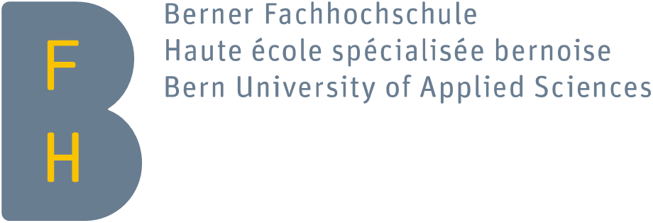

im Rahmen der Swissuniversities-Initiative: Stärkung der digitalen Kompetenzen im Bildungsbereich
Projektantrag bei Swissuniversities (15.11.18)
Projektpräsentation (Michael Röthlin 28.3.19)
Präsentation Zwischenstand (8.10.19)
Poster Workshop zu E-Assessment (4.11.19)
E-Assessment an der BFH (Präsentation Michael Röthlin 7.1.20)
Blog-Artikel (unveröffentlichter Beitrag von Céline Hüttenmoser und Michael Röthlin 22.4.21)
Inhaltlicher Schlussbericht (25.2.22)
In den einzelnen Departementen wurden Interviews zur Erhebung des Standes des Einsatzes in den Studiengängen der BFH durchgeführt.[1] Die Sammlung der Interviews befindet sich hier. Es handelt sich um Notizen in Rohform, welche die Situation vor Corona abgebildet haben. Ein Schlussbericht dazu ist gemäss Projekt-Zwischenbericht[2] noch ausstehend, auf einem Excelfile wurden Ergebnisse zusammengetragen und visualisiert.
Abbildung Lifecycle-Modell (Hüttenmoser/Röthlin 2021)
Grundsätzliche Fragen klären: «3) Rechtlich sicheres Prüfen muss gewährleistet sein. Hierfür sind Empfehlungen, Guidelines und Checklisten für die Anpassung von Prüfungsordnungen und sichere Prüfungsdurchführungen zu entwickeln. 4) Die Anforderungen an Technik und Infrastruktur für alle an der BFH eingesetzten E-Assessment-Szenarien müssen erhoben werden und Technik und Infrastruktur gegebenenfalls angepasst werden (letzteres ausserhalb des Projektes).»[4]
Rechercheergebnisse E-Assessment (Mandatsgruppe Digitales Lehren und Lernen, Dept. S Mai 20)
Moodle-Kurs E-Assessment Dept. S
Objects of the exam planning: Stakeholders
Sammlung didaktischer Qualitätskriterien in einem Excel-File
Überblick zu verschiedenen Assessment Szenarien in einem Excel-File
Moodle-Kurs Kompetenznachweise Rechtliches Dept. S
Moodle-Kurs Qualifikationen und Prüfungen BSc Soziale Arbeit
Moodle-Kurs Abschnitt 6 aus Lehre@HAFL «digitales Prüfen»
E-Assessment Risk Assessment Tool (EARAT) generiert dynamische Checklisten zu den jeweiligen Prüfungssituationen. Wurde bis jetzt nicht offiziell eingesetzt. Grundlagen fliessen evt. in neues PgB-Projekt ein.
Weblink: https://earat.bfh-moodle-labs.ch
Die dem Tool zugrundeliegenden Daten finden sich hier.
E-Assessment Risk Mitigation Checklist (Recommendations TI)
Präsentation E-Assessment Risk Assessment Tool EARAT
Gemäss Schlussbericht konnten «bezüglich juristischer Aspekte […] Unsicherheiten geklärt werden.»[5] Ein Grundlagendokument liegt nicht vor.
Liegt nicht ausgearbeitet vor.[6]
Konzept liegt nicht ausgearbeitet vor.[7] Ziel: Didaktische Qualität von E-Assessments durch Beratung und Weiterbildung sicherstellen sowie innovative kompetenzorientierte Prüfungsszenarien fördern; Niederschwellige Unterstützungsangebote.[8]
Gemäss Schlussbericht fanden und finden solche Angebote in den Departementen und BFHweit statt.[9] Speziell erwähnt sind «Moodle-Mini-Workshops»[10] und Webinare. Unterlagen zu den Webinaren finden sich exemplarisch bei den jeweiligen konkreten Umsetzungen (siehe unten 3.3).
Moodle-Kurs Virtuelle Akademie E-Assessment mit Moodle
«Für nahezu alle Phasen des möglichen Einsatzes von E-Assessments wurden neue Umsetzungen in der Lehre konzipiert», oftmals in der Form von Piloten.[11]
Flächendeckende Moodle-Kurse mit MS-Teams-Links und Aufzeichnungslinks, Onlineprüfungen mit Kamera.
Inputs / Austauschtreffen finden in bestehenden Austauschformaten statt. Verzögerung bei der Entwicklung von eigenständigen Austauschformaten.[12] Gemäss Projektantrag vom 15.11.18 soll «der departementsübergreifende Austausch von Best Practice im Bereich E-Assessment die Breitenwirkung erhöhen und die Bildung von Synergien sowie die Sicherung einheitlicher Qualitätsstandards in der BFH fördern».[13]
«Massive Vereinfachung des Einsatzes des Safe Exam Browsers im Zusammenspiel mit der Plattform Moodle. Damit wurde die Eintrittsschwelle für den Einsatz von sicheren E-Assessments im Präsenzmodus massiv gesenkt. Diese technische Arbeit konnte im Rahmen des Projekts spezifiziert, in Zusammenarbeit mit der Moodle-Community technisch umgesetzt werden.»[14]
Setup Moodle-Prüfung mit Safe Exam Browser (19.12.17)
Sichere Abwicklung elektronischer Prüfungen (Empfehlungen TI)
E-Assessments mit Safe Exam Browser und pdf-Ressourcen (16.1.20)
Pilotprojekt Prüfungen mit Moodle. Ein Erfahrungsbericht (April 2019)
Prüfungen im Distanzunterricht – Moodle Prüfungen (AHB 6.5.20)
Präsentation Webinar «Prüfungen mit Moodle» (AHB/TI 18.12.20)
Die Moodle-Testaktivität als didaktischer Werkzeugkasten (AHB/TI 8.9.21)
Anleitung / Checkliste Aktivität Moodle-Test (AHB)
Checkliste für Moodle-Prüfungen mit Quiz (TI - 3sprachig)
Checkliste für Moodle-Aufgaben (TI – 3sprachig)
Input Moodle Assignment Activity
Verwendung der Moodle-Aufgabenaktivität für die Kommunikation von Prüfungsergebnissen
Praxisbeispiel Adaptive Übungen in Moodle aus Präsentation (12.-14.9.21)
Moodle-Kurs HAFL Anleitungen Moodletest & Safe Exam Browser (SEB)
Screencasts zu Prüfen mit Moodle auf Kaltura-Channel
«Durch eine Neuentwicklung einer Moodle-Erweiterung können nun Präsentationen und weitere Studienleistungen anhand gestaltbarer Kriterienraster einfach bewertet und die Ergebnisse direkt an Studierende rückgemeldet werden.»[15]
Bewertungstool als Excel-file (ungeschützte Version 30.3.20)
Bewertungstool als Excel-file (geschützte Version 31.3.20)
Anleitung zum Tool «Bewertungen von Präsentationen» Excel (AHB / TI 7.4.20
Präsentation an SAMOO-Meeting (19.8.21)
Praxisbeispiel aus Präsentation (12.-14.9.21)
Moodle-Plugin «verbalfeedback» (Beschreibung aktueller Stand und Ausbauschritte 24.11.21)
Workshop Didaktik-Camp 22 AHB mit Erklärvideo (Moodle Kurs)
Moodle Moot Talk zu Plugin Verbalfeeedback
Beratendes E-Assessment zur Modulwahl (Zusammenstellung des eigenen Studiums durch Studierende).[16]
MSE Module Self Assessment Course (Fragebogen 18.2.21)
Praxisbeispiel aus Präsentation (12.-14.9.21)
Einstufungstest OOP TI Informatik (2020)
Praxisbeispiel aus Präsentation (12.-14.9.21)
Ganzer Prozess von der Ankündigung der Prüfungsmodalitäten bis und mit Prüfungseinsicht und -ablage.[17]
Webinar MSE Regular Exams 2020-21
Setup of Moodle Course for MSE Exams
Koordinierte Moodle-Prüfungen im Kooperationsmaster MSE (Kurzbericht «Best Practice»)
Praxisbeispiel aus Präsentation (12.-14.9.21)
Prüfungen im Distanzunterricht – Schriftliche Prüfungsformen auf Papier (AHB 6.5.20)
Anleitung / Checkliste schriftliche Prüfungen auf Papier (AHB)
Prüfungen im Distanzunterricht – Mündliche Prüfungsformen (AHB 8.5.20)
Prüfungen im Distanzunterricht – Prüfungen mit Spezialsoftware (AHB 8.5.20)
Weisung Distanzprüfungen (TI 6.11.20)
Moodle Prüfungen in der Distanzlehre (Checkliste HAFL 19.1.20)
Praxisbeispiel aus Präsentation (12.-14.9.21)
Möglichkeiten durch hybride Unterrichtsräume AHB Biel und Burgdorf (26.5.20)
[1] Gemäss Dokument Meilensteinplanung
[3] Formulierung gemäss Dokument Meilensteinplanung
[6] Gemäss Zwischenbericht 24.2.20 «noch nicht geklärt».
[7] Gemäss Zwischenbericht 24.2.20 «in Vorbereitung».